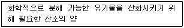
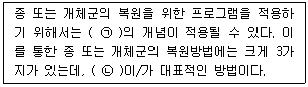
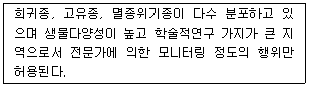
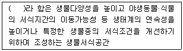
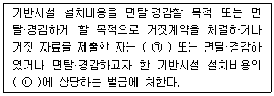
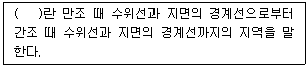
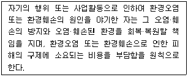
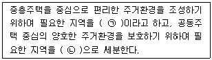

자연생태복원기사(구) (2019-08-04 기출문제)
1과목: 환경생태학개론
1. 생물 개체군 성장곡선에 대한 설명으로 틀린 것은?
- J자형, S자형 성장곡선이 나타난다.
- J자형 성장곡선은 외부 환경요인에 의해 조절된다.
- S자형 성장곡선은 불안정한 하등생물상에서 보여 진다.
- 수용한계(수용능력 K)는 생물적 요인과 비생물적 요인에 의해 영향을 받아 시간에 따라 급격히 변화할 수 있다.
(정답률: 77%)

2. 천이(succession)는 시간에 따라 어떤 지역에 있는 종들의 방향적이고 계속적인 변화를 의미 한다. 수십 년이나 수백 년이 지난 다음에 종조성에서의 중요한 변화가 발생 하지 않는 안정된 군집은?
- 극상군집
- 수관교체
- 사구천이
- 개척군집
(정답률: 88%)
3. 개체군의 공간분포에 관한 설명으로 틀린 것은?
- 자연에서 흔히 있는 분포형은 집중분포이다
- 새의 세력권제는 새를 불규칙적으로 분포하게 한다.
- 규칙분포는 바둑판처럼 심은 과수원 나무의 분포에서 볼 수 있다.
- 개체군의 집중분포는 습도, 먹이, 그늘과 같은 환경요인 때문이다.
(정답률: 62%)
4. 개체군 생태학에서 사망률(mortality)에 대한 설명으로 가장 적절한 것은?
- 단위 공간당 개체군의 크기를 말한다.
- 단위 시간당 죽음에 의해서 개체들이 사라지는 숫자를 말한다.
- 단위 시간당 생식 활동에 의해서 새로운 개체들이 더해지는 숫자를 말한다.
- 개체들이 공간에 분포되는 방법으로서 임의분포, 균일분포, 집중분포 등으로 구분한다.
(정답률: 84%)
5. 질소를 고정할 수 있는 생물이 아닌 것은?
- Nostoc과 같은 남조류
- Nitrobacter와 같은 질산화 세균
- Rhodospirillum과 같은 광영양 혐기세균
- Desulfovibrio와 같은 편성 혐기성 세균
(정답률: 49%)
6. 인의 순환에 대한 설명으로 틀린 것은?
- 척추동물의 뼈를 구성하는 성분이다.
- 호소의 퇴적물에 축적되는 경향이 있다.
- 해양에서 육지로 회수되는 인에는 기체상 인화합물이 가장 많다.
- 토양 속의 인은 불용성으로 흔히 식물생장의 제한요인으로 작용한다.
(정답률: 59%)
7. 중금속에 오염된 어느 늪지에 다음의 생물이 살고 있다. 생물농축이 일어날 경우 생체 내 중금속 농도가 가장 높은 생물은?
- 배스
- 피라미
- 하루살이
- 식물성 조류
(정답률: 79%)
8. 지구온난화를 유발하는 이산화 탄소의 양을 감축하여 온실가스에 대한 대비책 마련을 위해 채택된 것으로 기후변화협약과 관련 된 것은?
- 교토 의정서
- 워싱턴 의정서
- 제네바 의정서
- 몬트리올 의정서
(정답률: 71%)
9. 생태계의 구조에 대한 설명으로 틀린 것은?
- 생태계는 크게 비생물적 구성요소와 생물적 구성요소로 나눌 수 있다.
- 거대소비자는 다른 생물이나 유기물을 섭취하는 동물 등의 종속영양생물을 말한다.
- 생산자는 간단한 무기물로부터 먹이를 만들 수 있는 녹색 식물과 물질 순환에 관여하는 무기물 등을 말한다.
- 분해자는 미세소비자로서, 사체를 분해시키거나 다른 생물로부터 유기물을 취하여 에너지를 얻는 세균, 곰팡이 등의 종속영양생물 등을 들 수 있다.
(정답률: 69%)
10. 식물과 곤충간의 관련성으로 고려한 분류체계에서 화분매개충이 아닌 것은?
- 나비
- 매미
- 꿀벌
- 꽃등에
(정답률: 83%)
11. 한 종이 점유지역이 아닌 곳으로 분포범위를 넓히는 영역확장(range expansion)의 경우가 아닌 것은?
- 그 종이 양육과 훈련행동을 하는 경우
- 그 종의 산포를 저해하던 요인이 제거 된 경우
- 이전에는 부적당하던 지역이 적당한 지역으로 변화된 경우
- 종이 진화되어 부적당지역이 적당지역으로 이용할 수 있게 된 경우
(정답률: 73%)
12. 지구 온난화의 생태학적 영향에 대한 설명으로 틀린 것은?
- 지구 온난화로 인해 해수면이 낮아 질 것이다.
- 생물학자들은 지구 온난화가 서식지를 이동할 수 없는 식물에서 특히 커다란 영향을 미치게 될 것으로 믿고 있다.
- 지구 온난화로 인해 잡초,곤충, 다양한 환경에서 살아가는 질병매개 생물체는 개체수가 크게 증가하게 된다.
- 지구 온난화는 여러 지역에서 강우 패턴을 변화시켜 더욱 빈번하게 가뭄이 일어나게 한다.
(정답률: 85%)
13. 호수의 층상구조 설명으로 옳지 않은 것은?
- 표수층은 산소와 영양분이 풍부한 층이다.
- 수온약층은 온도와 산소가 급격히 변하는 층이다.
- 심수층은 산소는 부족하나 영양분이 풍부한 층이다.
- 호수는 일반적으로 표수층, 수온약층, 심수층으로 나눌 수 있다.
(정답률: 60%)
14. 다음 보기가 설명하는 것은?

- DO
- SS
- COD
- BOD
(정답률: 69%)
15. 부영양화 현상에 관한 설명 중 틀린 것은?
- 부영양화 현상이 있으면 용존산소량이 풍부해진다.
- 부영양화된 호수는 식물성 플랑크톤이 대량 발생되기 쉽다.
- 부영양화 현상은 물이 정체되기 쉬운 호수에서 잘 발생한다.
- 부영양화된 호수는 식물성 조류에 의하여 물의 투명도가 저하 된다.
(정답률: 83%)
16. 군집의 구조적 측면에서 같은 표징종을 포함하는 식물의 군집은?
- 군락
- 우점종
- 부수종
- 지표종
(정답률: 65%)
17. "지구 생물다양성 전략"의 목적을 달성하기 위해서 국제적으로 권장되고 있는 내용과 가장 거리가 먼 것은?
- 생물다양성협상을 이행한다.
- 국제적 실행기구를 만든다.
- 생물다양성의 중요성을 국가계획 수립 시 고려한다.
- 지구자원에 대한 전략적이고 활발한 개발을 보장한다.
(정답률: 77%)
18. 적조발생의 원인으로 틀린 것은?
- 질소, 인과 같은 영양물질이 유입될 때
- 바닷물의 염분농도가 높아졌을 때
- 바닷물 온도가 섭씨 25℃ 이상일 때
- 철, 코발트 등 미량금속류가 첨가되었을 때
(정답률: 72%)
19. 한 종개체군과 다른 종개체군 사이에서 두 개체군이 모두 이익을 얻으며 서로 상호 작용을 하지 않으면 생존하지 못하는 관게는?
- 상리공생
- 상조공생
- 편리공생
- 내부공생
(정답률: 77%)
20. 종개체군 사이의 상호작용 중 서로 피해를 주는 관계로 옳은 것은?
- 중립
- 경쟁
- 공생
- 공존
(정답률: 86%)
2과목: 환경계획학
21. 생태공원조성 이론의 설명으로 틀린 것은?
- 지속가능성은 인간의 활동을 중심으로 공간을 창출하여 삶의 질을 높인다.
- 생물다양성은 유전자, 종, 소생물권 등의 다양성을 의미하며 생물학적 다양성과 생태적 안정성은 비례한다.
- 생태적 건전성은 생태계 내 자체 생산성을 유지함으로써 건전성이 확보되며, 지속적으로 생물자원 이용이 가능하다.
- 최소의 에너지 투입은 자연 순환계를 형성하여 에너지 자원 인력을 절감하고 경제성 효율을 극대화할 수 있도록 계획하여 인위적인 에너지 투입을 최소화하도록 한다.
(정답률: 66%)
22. 일정 토지의 자연성을 나타내는 지표로서 식생과 토지의 이용현황에 따라 녹지공간의 상태를 등급화한 녹지자연도의 등급 기준으로 틀린 것은?
- 3등급 - 과수원 - 경작지나 과수원, 묘포지 등과 같이 비교적 녹지식생의 분량이 우세한 지구
- 4등급 - 2차초원 - 갈대, 조릿대군락 등과 같이 비교적 식생의 키가 높은 2차 초원지구
- 6등급 - 조림지 - 각종 활엽수 또는 침엽수의 식생지구
- 7등급 - 2차림 - 1차적으로 2차림으로 불리는 대생식생지구
(정답률: 51%)
23. 생태계의 생물다양성과 관련이 없는 것은?
- 유전적 다양성
- 종 다양성
- 생태계 다양성
- 작물의 다양성
(정답률: 76%)
24. 도시지역의 녹지지역 세분화에 해당하지 않는 지역은?
- 전용녹지지역
- 보전녹지지역
- 생산녹지지역
- 자연녹지지역
(정답률: 58%)
25. 도시 및 지역차원의 환경계획으로 생태네트워크의 개념이 아닌 것은?
- 공간계획이나 물리적 계획을 위한 모델링 도구이다.
- 기본적으로 개별적인 서식처와 생물종을 목표로 한다.
- 지역적 맥락에서 보전가치가 있는 서식처와 생물종의 보전을 목적으로 한다.
- 전체적인 맥락이나 구조측면에서 어떻게 생물종과 서식처를 보전 할 것인가에 중점을 둔다.
(정답률: 72%)
26. 기후 변화 협약의 내용이 아닌 것은?
- 몬트리올 의정서에서 규제 대상물질을 규정하고 있다.
- 규제대상물질은 탄산, 메탄가스, 프레온 가스 등이 대표적인 예이다.
- 협약의 목적은 이산화탄소를 비롯한 온실가스의 방출을 제한하여 지구온난화를 방지하고자 하는 것이다.
- 협약내용은 기본원칙, 온실가스 규제문제, 재정지원 및 기술이전문제, 특수상황에 처한 국가에 대한 고려로 구성되어 있다.
(정답률: 49%)
27. 생태적 복원의 유형에 대한 설명으로 틀린 것은?
- 복구(rehabilitation) - 완벽한 복원으로 단순한 구조의 생태계 창출
- 복원(restoration) - 교란 이전의 상태로 정확하게 돌아가기 위한 시도
- 복원(restoration) - 시간과 많은 비용이 소요되기 때문에 쉽지 않음
- 대체(replacement) - 현재 상태를 개선하기 위하여 다른 생태계로 원래의 생태계를 대체하는 것
(정답률: 75%)
28. 도시지역과 그 주변 지역의 무질서한 시가화를 방지하고 계획적.단계적인 개발을 도모하기 위하여 대통령령이 정하는 일정기간동안 시가화를 유보할 필요가 있다고 인정하여 지정하는 구역은?
- 시가화관리구역
- 시가화조정구역
- 시가화유보구역
- 시가화예정구역
(정답률: 44%)
29. 사회기반형성 차원에서의 환경계획의 내용과 거리가 먼 것은?
- 소음방지
- 에너지계획
- 환경교육 및 환경감시
- 시민참여의 제도적 장치
(정답률: 57%)
30. 자연입지적 토지이용유형에서 자연자원 유형이 아닌 것은?
- 역사·문화환경
- 해안환경
- 하천·호수환경
- 산림·계곡환경
(정답률: 83%)
31. 생태네트워크를 구성하는 원리 중 형태에 따른 분류가 아닌 것은?
- 점(Point)형
- 선(Line)형
- 면(Area)형
- 징검다리(Stepping stone)형
(정답률: 79%)
32. 환경계획을 위해 요구되는 생태학적 지식으로 볼 수 없는 것은?
- 자연계를 설명하는 이론으로서의 순수생태학적 지식
- 훼손된 환경의 복원과 새로운 환경건설에 관련된 지식
- 토지이용계획 수립에 필요한 지역의 개발계획에 관련된 정보
- 인간의 환경에 있어서 급속히 파괴되는 자연조건과 불균형에 대처하기 위한 지식
(정답률: 69%)
33. 백두대간의 무분별한 개발행위로 인한 훼손을 방지함으로써 국토를 건전하게 보호하고, 쾌적한 자연환경을 조성하기 위하여 백두대간 보호지역을 지정 구분한 것은?
- 핵심구역, 전이구역
- 핵심구역, 완충구역
- 완충구역, 전이구역
- 핵심구역, 완충구역, 전이구역
(정답률: 65%)
34. 한반도의 생태축에 속하지 않는 것은?
- 백두대간 생태축
- 남해안 도서보전축
- 남북접경지역 생태보전축
- 수도권 개발제한구역 환상녹지축
(정답률: 72%)
35. 자연환경보전기본계획의 내용으로 적절하지 않는 것은?
- 자연경관의 보전·관리에 관한 사항
- 지방자치단체별로 추진할 주요 자연보전시책에 관한 사항
- 사업시행에 소요되는 경비의 산정 및 재원조달 방안에 관한 사항
- 행정계획과 개발 사업에 대한 환경친화적 계획 기법 개발에 관한 사항
(정답률: 31%)
36. 환경의 특성에 대한 설명으로 틀린 것은?
- 자연자원은 풍부할수록 회복탄력성이 높지만, 파괴될수록 복원력이 떨어진다.
- 환경문제는 어느 한 지역, 한 국가만의 문제가 아니라, 범지구적, 국제간의 문제이다.
- 환경문제는 문제발생시기와 이로 인한 영향이 현실적으로 나타나는 시점 사이에 차이가 존재하지 않는다.
- 환경문제는 상호 작용하는 여러 변수들에 의해 발생하므로 상호간에 인과관계가 성립되어 문제해결을 어렵게 한다.
(정답률: 79%)
37. 환경용량 개념에 대한 생태학적 측면과 관계없는 것은?
- 지역의 수용용량
- 생태계 자정능력
- 지역의 경제적 개발수용력
- 자연 자원의 지속가능한 생산
(정답률: 72%)
38. 환경친화적인 자연 입지적 토지이용을 위한 세부적인 규제 지침의 유형의 설명으로 옳은 것은?
- 경관 : 돌출적이고 위압적인 인공경관으로 지역적인 특색을 부각시킨다.
- 환경 : 주변 하천 및 실개천에 수중보를 설치하여 시민들을 위한 친수공간을 극대화 한다.
- 입지규제 : 자연적·농업적 토지이용에서 도시적 토지이용으로의 토지전용을 가능하게 해야 한다.
- 건축물 : 지역별 특징을 따라서 건축물의 형태, 재료, 색채 등 외관에 관한 별도의 기준을 마련해야 한다.
(정답률: 64%)
39. 환경친화적 단지조성계획의 기본목표에 대한 설명으로 틀린 것은?
- 기존의 식생·자연지형·수로 등의 변경을 최대화함으로써 환경부하를 줄일 수 있도록 유도하고 녹지공간을 체계화한다.
- 수자원 순환의 유지 및 쓰레기의 재활용 건축재료의 이용 등 자연환경의 순환체계를 보존하여 자연계의 물질 순환이 활성화 될 수 있도록 유도 한다.
- 자연생태계가 유지될 수 있도록 일정 규모의 소생물권을 조성하여 훼손되어 가고 있는 소생물권을 유지·복원할 수 있도록 계획 한다.
- 에너지 소비를 줄일 수 있는 재료의 사용 및 자연에너지를 최대한 줄일 수 있는 계획을 함으로써 환경오염물질의 배출을 줄일 수 있도록 유도한다.
(정답률: 69%)
40. 생태도시의 설계지표 설정 시 고려해야할 사항이 아닌 것은?
- 정보수집이 용이해야 한다.
- 단기간에 걸친 경향을 보여주어야 한다.
- 개별적, 종합적으로 의미가 있어야 한다.
- 정책, 서비스, 생활양식 등의 변화를 유발해야 한다.
(정답률: 80%)
3과목: 생태복원공학
41. 어떤 목본류를 훼손지에 3g/m2 으로 파종하였다. 이때 이종자의 발아율 40%, 순도 90%, 보정율 0.5이고 평균립수 100 립/g 이라면 발생기대본수 (본/m2)는 약 얼마인가?
- 27
- 54
- 108
- 216
(정답률: 63%)
42. 생태계의 원서식지 면적이 감소되어 원식성을 유지하기 어려울 때의 복구 조치에 해당하지 않는 것은?
- 비포장화
- 가드레일 설치
- 공사위치 변경 또는 우회
- 기존 서식지의 면적 확대
(정답률: 65%)
43. 토양환경분석을 위해 일반적으로 사용하는 정밀 토양도의 축척은?
- 1/10000
- 1/25000
- 1/50000
- 1/70000
(정답률: 67%)
44. 고체상태 또는 액체상태의 대기오염물질이 식물체의 표면에 부착되는 현상을 무엇이라 하는가?
- 흡수
- 확산
- 희석
- 흡착
(정답률: 81%)
45. 식재용토 토성의 측정, 처리 및 적용기준에서 볼 때 수분함량은 건토증의 몇 %가 존재하는 것이 가장 적정한가?
- 10 ~ 20%
- 20 ~ 40%
- 40 ~ 80%
- 80% 이상
(정답률: 39%)
46. 자연형 하천복구를 통해 애반딧불이의 서식을 유도할 때 그 유충의 먹이원으로 필요한 수생물종은?
- 다슬기
- 깔따구
- 소금쟁이
- 왕잠자리
(정답률: 62%)
47. 생물 다양성의 보존에 대한 설명으로 틀린 것은?
- 생물 다양성은 종내, 종간, 생태계의 다양성을 포함 한다.
- 생물 다양성은 생물종은 물론 유전자, 서식처의 다양성을 포함한다.
- 생물 다양성은 자연환경복원의 가장 중심적인 과제이다.
- 생물 다양성은 서식처 복원보다는 생물종의 복원에 더욱 관심을 가져야 한다.
(정답률: 80%)
48. 생태복원을 위한 공간구획 및 동선 계획 단계의 내용과 가장 거리가 먼 것은?
- 동선은 최대한으로 조성하는 것이 바람직하다.
- 공간 구획은 핵심지역, 완충지역, 전이 지역으로 구분한다.
- 목표종이 서식해야 하는 지역은 핵심지역으로 설정한다.
- 자연적인 공간과 인공적인 공간은 격리형 혹은 융합형으로 조정한다.
(정답률: 70%)
49. 생태복원의 측면에서 도시림에 대한 설명 중 가장 적합하지 않은 것은?
- 가로수, 주거지의 나무, 공원수, 그린벨트의 식생 등을 포함한다.
- 큰 나무 밑의 작은 나무와 풀을 제거하여 경관적인 측면을 고려한 관리가 되어야 한다.
- 조성 목적과 기능 발휘의 측면에서 생활환경형, 경관형, 휴양형, 생태계보전형, 교육형, 방재형, 등으로 구분한다.
- 최근에는 지구온난화와 생물다양성 등의 지구환경문제와 관련하여 환경보존의 기능과 생태적 기능이 강조된다.
(정답률: 79%)
50. 자생적 독립영양 천이유형에서 종 다양성의 천이과정으로 가장 적합한 것은?
- 지속적으로 증가한다.
- 처음에는 감소하나 개체의 수가 증가함에 따라 성숙된 단계에서는 증가한다.
- 처음에는 감소하나 개체의 수가 증가함에 따라 성숙된 단계에서는 안정된다.
- 처음에는 증가하나 개체의 크기가 증가함에 따라 성숙된 단계에서는 안정되거나 감소한다.
(정답률: 60%)
51. 수질정화 식물과 가장 거리가 먼것은?
- 부들, 갈대
- 택사, 돌피
- 부레옥잠, 부들
- 개구리밥, 창포
(정답률: 67%)
52. 녹화 식물의 종류를 흡착형 식물과 감기형 식물로 나눌 때 흡착형 식물로만 이루어진 것은?
- 칡, 멀꿀, 으름덩굴
- 개머루, 으아리, 인동
- 담쟁이덩굴, 송악, 모람
- 마삭줄, 줄사철나무, 노박덩굴
(정답률: 61%)
53. 비탈 다듬기공사에서 단면적 A1, A2는 각각 2.1m2, 0.7m2 이며, A1과 A2의 거리가 6m 일때 토사량(m3)은? (단, 평균단면적법을 이용한다.)
- 2.4
- 8.4
- 8.8
- 16.8
(정답률: 61%)
54. 비탈면 녹화를 위한 식생군락외 조성 시 고려해야 할 내용으로 가장 거리가 먼 것은?
- 주변 식생과 동화
- 식생의 안정 및 천이
- 비탈면 주변의 생태계를 고려
- 급속 녹화를 위한 단순식생의 군락 조성
(정답률: 79%)
55. 식생기반재(토양) 분석의 기초이론 중 물리성을 평가하는 항목이 아닌 것은?
- 토성
- 토양 온도
- 토양의 밀도
- 토양의 염기치환용량
(정답률: 58%)
56. 일반적으로 황폐지 또는 황폐산지는 황폐의 정도와 특성에 따라서 다양하게 구분하는데, 가장 초기 단계를 무엇이라 하는가?
- 민둥산
- 척암임지
- 황폐이행지
- 초기황폐지
(정답률: 42%)
57. 토양개량재인 피트모스에 대한 설명으로 틀린 것은?
- 일반적으로 pH 7~8 정도의 알칼리성을 나타내므로 산성토양의 치환에 적합하다.
- 섬유가 서로 얽혀서 대공극을 형성하는 것과 함께 섬유자체가 다공질이고 친수성이 있다는 특징이 있다.
- 보수성, 보비력이 약한 사질토, 또는 통기성, 투수성이 불량한 점성토에서의 사용이 효과적이다.
- 양이온 교환용량 (CEC)이 130 mg/100g 정도로 퇴비에 비해 높아서 보비력의 향상에 효과적이다.
(정답률: 47%)
58. 대지면적이 100m2이며, 건축물 면적은 50m2, 자연지반녹지가 30m2, 부분포장 면적이 20m2인 경우 생면적률(%)은? (단, 자연지반녹지의 가중치는 1.0, 부분포장면의 가중치는 0.5로 한다)
- 20
- 30
- 40
- 50
(정답률: 60%)
59. 도로가 개설되면서 산림생태계가 단절된 구간에 육교형 생태통로를 설치할 때 고려되어야 할 사항과 가장 거리가 먼 것은?
- 통로의 가장자리를 따라서 선반을 설치한다.
- 중앙보다 양끝을 넓게 하여 자연스러운 접근을 유도한다.
- 필요시 통로 내부에 양서류를 위한 계류 혹은 습지를 설치한다.
- 통로 양측에 벽면을 설치하여 주변으로부터 빛, 소음, 천적 등으로부터의 영향을 차단한다.
(정답률: 52%)
60. 매립지 복원기술과 가장 거리가 먼 것은?
- 성토법
- 사주법
- Biosolids를 이용한 공법
- 비사방지용 산흙 피복법
(정답률: 42%)
4과목: 경관생태학
61. 종 또는 개체군의 복원에 대한 보기의 설명에서 각각의 ( )에 들어갈 용어를 순서대로 나열한 것은?

- ㉠ 메타개체군, ㉡ 이주(Translocation)
- ㉠ SLOSS, ㉡ 방사 (Reintroduction)
- ㉠ 비오톱(Biotope), ㉡ 포획번식 (Captive Breeding)
- ㉠ 포획번식(Captive Breeding), ㉡ 방사 (Reintroduction)
(정답률: 58%)
62. 코리더의 기능으로 틀린 것은?
- 공급원
- 서식처
- 여과장치
- 오염 발생원
(정답률: 73%)
63. 지역생태학에서 지역(region)에 대한 설명으로 틀린 것은?
- 다양한 지형, 자연교란 및 인간 활동들이 풍부한 다양성을 가진 생태학적 조건들을 제공한다.
- 교통, 통신, 및 문화에 의해 서로 연결되어 있는 인간 활동과 관심 역시 인간 활동의 범위를 제한한다.
- 국지생태계의 집합이 몇 km2 넓이의 공간에 걸쳐 같은 형태로 반복되어 나타나는 토지모자이크이다.
- 광범위한 지리학적 공간으로서 공통적으로 나타나는 대기 후 및 공통적인 인간 활동과 관심이 포함된다.
(정답률: 29%)
64. 경관의 구조, 기능, 변화의 원리와 관계가 없는 것은?
- 경관 안정성의 원리
- 에너지 흐름의 원리
- 천이의 불균일성 원리
- 생물적 다양성의 원리
(정답률: 53%)
65. 환경영향평가 기법에서 중점 평가 인자선정기법과 관계가 없는 것은?
- 네트워크법
- 격자분석법
- 지도중첩법
- 체크리스트법
(정답률: 43%)
66. 지리정보체계(GIS)를 활용하여 분석 가능한 경관 생태 항목들 중 틀린 것은?
- 논농사 지역의 잡초분포 파악
- 산림군락지 내 병해충의 종류 및 원인 파악
- 토양도 작성을 통한 토양형성 과정의 이해
- 배수구역 내의 물수지 평형과 하천 오염원 계산
(정답률: 59%)
67. 고도 832km에서 지구의 폭 117km를 일시에 관측하며, 26일 마다 동일 위치로 돌아오는 태양동기 준희귀궤도를 가지고 있는 위성으로서 HRV/XS의 해상력이 약 20m2인 위성은?
- SPOT
- MOS-1
- Landsat TM
- Landsat MSS
(정답률: 41%)
68. 도시 비오톱의 기능 및 역할과 가장 거리가 먼 것은?
- 생물종 서식의 중심지 역할을 수행한다.
- 기후, 토양, 수질 보전의 기능을 가지고 있다.
- 건축물의 스카이라인 조절 기능을 가지고 있다.
- 도시민들에게 휴양 및 자연체험의 장을 제공해 준다.
(정답률: 73%)
69. 다음의 비오톱 타입 중 훼손 후 재생에 가장 오랜 시간이 소요되는 것은?
- 빈영양단경초지
- 빈영양수역의 식물
- 부영양수역의 식생
- 동굴에만 서식하는 생물종
(정답률: 72%)
70. 도로 비탈면의 구조에 포함되지 않는 것은?
- 소단
- 절개비탈면
- 성토비탈면
- 자연비탈면
(정답률: 45%)
71. 최근 농촌경관 변화의 경향과 관계가 없는 것은?
- 고립된 마을의 증가
- 농지전환을 통한 토지모자이크의 변화
- 농촌 마을 숲 관리 및 연료목 사용 증가
- 농촌 노동 인구의 감소로 인한 휴경지 증가
(정답률: 62%)
72. 경관 요소 간의 연결성을 확대하는 방법으로 가장 거리가 먼 것은?
- 코리더의 설치
- 징검다리식 녹지보전
- 기존 녹지의 면적확대
- 동물이동로 주변의 포장도로 증설
(정답률: 75%)
73. 경관조각(patch) 모양을 결정짓는 요인 중 가장 거리가 먼 것은?
- 생물다양성
- 역동적인 교란
- 침시과 퇴적, 빙하 등의 지형학적 요소
- 인공적인 조각에서 많이 볼 수 있는 철도, 도로 등과 같은 그물형태
(정답률: 36%)
74. 해안 사구에 대한 설명으로 틀린 것은?
- 해안 고유 식물과 동물의 서식지 기능을 한다.
- 해안사구는 육지와 바다 사이의 퇴적물의 양을 조절한다.
- 해안사구 형성에 영향을 주는 요인으로 모래 공급량, 풍속 및 풍향이 있다.
- 해안사구는 1차 사구와 2차 사구로 구분하고, 바다 쪽 사구를 2차 사구라고 한다.
(정답률: 74%)
75. UNESCO MAB의 생물권보전지역에 의한 기준에서 다음 설명에 해당되는 지역은?

- 핵심지역(Core Area)
- 완충지역(Buffer Zone)
- 전이지역(Transition Area
- 보전지역(Conservaion Area)
(정답률: 72%)
76. 염분이 높은 해안습지에 서식하기 위한 염생식물의 대응 기작에 대한 설명으로 틀린 것은?
- 염분을 흡수하여 체내에서 분해하여 영양물질로 이용하는 기작
- 염분 자체의 흡수 억제 기작 및 액포를 사용하여 염분을 저장하는 기작
- 뿌리에 흡수된 염분이 잎까지 이동되었다가 다시 뿌리를 통하여 토양으로 이동되는 기작
- 표피의 염선(salt gland)에 염분을 축적하였다가 세포가 파괴되면서 체외로 배출하는 기작
(정답률: 40%)
77. 개체군 크기를 늘리고 최소존속개체군 이상이 되도록 하는 보전생물학적인 방법으로 적당하지 않은 것은?
- 서식처의 확대
- 생태통로의 설치
- 멸종위기 동·식물의 수집
- 패치연결 징검다리 녹지의 조성
(정답률: 76%)
78. 원격탐사(RS)기법의 특징에 대한 설명으로 틀린 것은?
- 컴퓨터를 이용하여 손쉽게 분석할 수 있다.
- 광범위한 지역의 공간정보를 획득하기에 용이 하다.
- 정밀한 땅속 지하 암반의 형태를 쉽게 추출할 수 있다.
- 시각적 정보를 지도의 형태로 제공함으로써 누구나 이해하기 용이 하다.
(정답률: 71%)
79. 도시경관생태의 보전과 관리를 위한 생태적인 도시계획을 위한 적절한 지침이 아닌 것은?
- 도심에 적응하는 생물상을 고려한다.
- 토지 이용에 대한 밀도를 다양하게 한다.
- 생물다양성을 높이기 위해 특정 외래수종을 도입한다.
- 도시 내의 큰 숲을 가능하면 보전하여 보호구역을 만든다.
(정답률: 80%)
80. 해양의 유형별 경관생태에 대한 설명 중 틀린 것은?
- 갯벌의 유형에는 모래 갯벌, 펄 갯벌, 혼합 갯벌 등이 있다.
- 암반해안은 해파에 의한 침식해안으로 파도의 침식 작용의 결과로 형성된다.
- 해안 사구는 육지와 바다 사이의 퇴적물양을 조절하여 해안을 보호하는 기능을 가지고 있다.
- 사빈은 해류, 하안류에 의하여 운반된 모래가 파랑에 의하여 밀려 올려지고 탁월풍의 작용을 받아 모래가 낮은 구릉 모양으로 쌓인 지형을 말한다.
(정답률: 60%)
5과목: 자연환경관계법규
81. 백두대간 보호에 관한 법률상 백두대간 보호지역을 지정. 고시하는 행정기관장은?
- 산림청장
- 환경부장관
- 국토교통부장관
- 국립공원공단 이사장
(정답률: 55%)
82. 습지보전법상 규정에 의한 승인을 받지 아니하고 습지주변관리지역에서 간척사업, 공유수면매립사업 또는 위해행위를 한 자에 대한 벌칙기준으로 옳은 것은?
- 1년 이하의 징역 또는 5백만원 이하의 벌금에 처한다.
- 2년 이하의 징역 또는 2천만원 이하의 벌금에 처한다.
- 3년 이하의 징역 또는 5천만원 이하의 벌금에 처한다.
- 5년 이하의 징역 또는 7천만원 이하의 벌금에 처한다.
(정답률: 33%)
83. 백두대간 보호에 관한 법률상 백두대간 보호 기본계획은 몇 년 마다 수립하는가?
- 3년
- 5년
- 10년
- 15년
(정답률: 69%)
84. 독도 등 도서지역의 생태계 보전에 관한 특별법상 특정도서 지정대상으로 가장 거리가 먼 것은? (단, 광역시장, 도지사 또는 특별자치도서지사가 추천하는 도서는 제외)
- 해안, 연안, 용암동굴 등 자연경관이 뛰어난 도서
- 문화재보호법 규정에 의거 무형 문화재적 보전가치가 높은 도서
- 야생동물의 서식지 또는 도래지로서 보전할 가지가 있다고 인정되는 도서
- 수자원(水資源), 화석, 희귀 동식물, 멸종위기 동식물, 그 밖에 우리나라 고유 생물종의 보존을 위하여 필요한 도서
(정답률: 73%)
85. 다음은 자연환경보전법상 사용되는 용어의 정의이다. ( )안에 알맞은 것은?

- 자연생태계
- 복원생태계
- 창조생태계
- 소(小)생태계
(정답률: 63%)
86. 다음은 국토의 계획 및 이용에 관한 법률에 따른 벌칙기준이다. ( )안에 알맞은 것은?

- ㉠ 1년 이하의 징역, ㉡ 3배 이하
- ㉠ 1년 이하의 징역, ㉡ 10배 이하
- ㉠ 3년 이하의 징역, ㉡ 3배 이하
- ㉠ 3년 이하의 징역, ㉡ 10배 이하
(정답률: 43%)
87. 습지보전법상 다음 ( ) 안에 알맞은 용어는?

- 경계습지
- 연안습지
- 조석습지
- 하천습지
(정답률: 68%)
88. 자연환경보전법상 생태·경관 보전 지역에서 허용 가능한 행위는?
- 토석의 채취
- 토지의 형질 변경
- 하천·호소등의 구조 변경
- 기존 거주민의 영농 행위
(정답률: 78%)
89. 환경정책기본법상 보기가 설명하고 있는 원칙은?

- 자연복원 책임원칙
- 원상회복 책임원칙
- 생태복원 책임원칙
- 오염원인자 책임원칙
(정답률: 51%)
90. 국토의 계획 및 이용에 관한 법령상 보호지구를 세분한 것에 해당되지 않는 것은?
- 생태계보호지구
- 항만시설보호지구
- 중요시설물보호지구
- 역사문화환경보호지구
(정답률: 54%)
91. 생물다양성 보전 및 이용에 관한 법령상 생물다양성관리 계약에 따라 실비보상 하는 경우가 아닌 것은?
- 습지 등을 조성하는 경우
- 휴경 등으로 수확이 불가능 하게 된 경우
- 경작방식의 변경 등으로 수확량이 감소하게 된 경우
- 장마, 냉해 등 자연재해에 의한 농작물 수확량 감소하게 된 경우
(정답률: 47%)
92. 자연환경보전법규상 생태통로의 설치 기준으로 틀린 것은?
- 생태통로의 길이가 길수록 폭을 좁게 설치하여 생태통로를 이용하는 동물들이 순식간에 빠른 속력으로 이동하는 것을 방지한다.
- 생태통로를 이용하는 동물들이 통로에 접근할 때 불안감을 느끼지 아니하도록 생태통로 입구와 출구에는 원칙적으로 현지에 자생하는 종을 식수하며, 토양 역시 가능한 한 공사 중 발생한 절토를 사용한다.
- 동물이 많이 횡단하는 지점에 동물들이 많이 출현하는 곳임을 알려 속도를 줄이거나 주의하도록 그 지역의 대표적인 동물 모습이 담겨 있는 동물출현표지판을 설치한다.
- 생태통로 중 수계의 설치된 박스형 암거는 물을 싫어하는 동물도 이동할 수 있도록 양쪽에 선반형 또는 계단형의 구조물을 설치하며, 작은 배수로나 도량을 설치한다.
(정답률: 79%)
93. 환경정책기본법령상 다음 오염물질의 대기환경기준으로 옳지 않은 것은?
- 오존 - 1시간 평균치 0.1ppm 이하
- 일산화탄소 - 1시간 평균치 0.15ppm 이하
- 아황산가스 - 24시간 평균치 0.⑤ppm 이하
- 이산화질소 - 24시간 평균치 0.06ppm 이하
(정답률: 43%)
94. 국토기본법령상 국토교통부장관이 국토에 관한 계획 또는 정책수립 등을 위해 행하는 국토조사 사항 중 "대통령령으로 정하는 사항"에 해당하지 않는 것은? (단, 그 밖에 국토해양부장관이 필요하다고 인정하는 사항 등은 제외)
- 자연생태에 관한 사항
- 방재 및 안전에 관한 사항
- 농림·해양·수산에 관한 사항
- 지형·지물 등 지리정보에 관한 사항
(정답률: 37%)
95. 환경정책기본법상 국가 및 지방자치단체가 환경기준의 유지를 위해 환경에 관계되는 법령을 제정 또는 개정하거나 행정계획의 수립 또는 사업 집행 시 고려해야 할 사항으로 가장 거리가 먼 것은?
- 환경오염지역의 원상회복
- 환경 악화의 예방 및 그 요인의 제거
- 인구·산업·경제·토지 및 해양의 이용 등 환경변화 여건에 관한 사항
- 새로운 과학기술의 사용으로 인한 환경오염 및 환경훼손의 예방
(정답률: 34%)
96. 야생생물 보호 및 관리에 관한 법률규상 멸종위기 야생생물 Ⅰ급(포유류)에 해당하는 것은?
- 물범(Phoca largha)
- 스라소니(Lynx lynx)
- 담비(Martes flavigula)
- 큰바다사자(Eumetopias jubatus)
(정답률: 53%)
97. 야생생물보호 및 관리에 관한 법률 시행령상 생물자원의 분류.보전 등에 관한 관련 전문가에 해당하는 사람으로 거리가 먼 것은?
- 「국가기술자격법」에 의한 생물분류기사
- 「국가기술자격법」에 의한 자연환경기사
- 생물자원 관련 분야의 석사학위 이상 소지자로서 해당 분야에서 1년 이상 종사한 사람
- 생물자원 관련 분야의 학사학위 이상 소지자로서 해당 분야에서 3년 이상 종사한 사람
(정답률: 59%)
98. 다음은 국토의 계획 및 이용에 관한 법률 시행령에서 용도지역 중 주거지역의 세분 사항이다. ( )안에 알맞은 것은?

- ㉠ 제2종전용주거지역, ㉡ 제3종일반주거지역
- ㉠ 제3종일반주거지역, ㉡ 제2종전용주거지역
- ㉠ 제3종전용주거지역, ㉡ 제2종일반주거지역
- ㉠ 제2종일반주거지역, ㉡ 제2종전용주거지역
(정답률: 50%)
99. 야생생물 보호 및 관리에 관한 법률상 환경부장관은 야생생물의 보호와 멸종 방지를 위하여 몇 년마다 멸종위기 야생생물을 정하는가? (단, 특별히 필요하다고 인정할 때에는 제외)
- 1년
- 2년
- 3년
- 5년
(정답률: 52%)
100. 자연공원법상 용도지구 중 공원자연보호지구에 해당하지 않는 곳은?
- 경관이 특히 아름다운 곳
- 생물다양성이 특히 풍부한 곳
- 자연생태계가 원시성을 지니고 있는 곳
- 마을이 형성된 지역으로서 주민생활을 유지하는 데에 필요한 곳
(정답률: 77%)